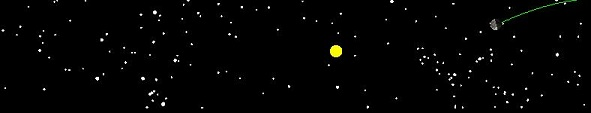

日蝕與月蝕
概述
這是個模擬日蝕與月蝕的程式，白道面(月球繞行太陽的軌道面)與黃道面(地球繞行太陽的軌道面)有5.145度的夾角，這就是為何不是每個月都會發生月蝕，除此之外，月球會沿月球公轉方向向前移動，每8.85年移動一周，即是所謂的拱線運動。從動畫能看見軌道面傾斜、拱線運動、日-地-月之間的關係(太陽、地球、月亮的大小沒有依照真實比例繪製)，以及地球及月亮的反射日光面，還有發生日、月蝕位置(分別為黃色地區及綠色地區)。在黃道面視窗中，能觀察自黃道面平視所見，能看見太陽與月球在(黃道面+/-七度)的相對位置移動，也能觀察到月球在週期各個階段在地球能見的亮面，日、月蝕發生在日-地-月排成一直線的時候。
這個模擬動畫是用來介紹學生關於月球的移動與各個階段的狀態，更多的模擬動畫能在OSP ComPADRE網站找到。
軌道面
- 動畫顯示選單
- 軌道面: 畫出白道面與黃道面。
- 日-地連線: 畫出太陽與地球的連線。
- 亮面方向: 畫出從地球看月球亮面所在位置方向。
- 顯示星星: 顯示背景星星。
- 更改月亮傾斜: 在下方能夠調整月亮的軌道傾斜面。
黃道面